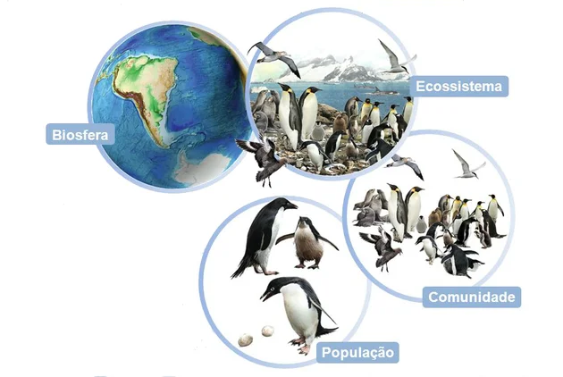

Ao estudar ecologia é importante saber que ela se divide em níveis de organização, que se dividem em população, comunidade, ecossistemas e biosfera.
População
A população representa o conjunto de organismos da mesma espécie que vivem juntos e apresentam maiores chances de reprodução entre si.
Inicialmente, essa organização era utilizada apenas para grupos humanos, depois foi ampliado para qualquer grupo de organismos.
As espécies, por sua vez, são os organismos com características genéticas semelhantes. Com isso, o cruzamento de indivíduos da mesma espécie gera descendentes férteis.
Exemplos: caranguejos, ursos, pau-brasil, etc;
Comunidade
A comunidade representa o conjunto das populações que vivem numa mesma região, no qual vivem em determinado local, com condições ambientais específicas e interagindo entre si. Também chamado de comunidade biológica, biocenose ou biótopo.
Exemplo de comunidades pode ser citado as aves, insetos e plantas de uma região.
Biosfera
A biosfera é o nível mais amplo, pois ele corresponde ao conjunto de todos os ecossistemas das diferentes regiões do planeta, ou seja, o local onde estão todos os seres vivos. É a reunião de toda a biodiversidade existente na Terra. A biodiversidade, por sua vez, significa a variedade de vida existente, englobando toda a riqueza das espécies.